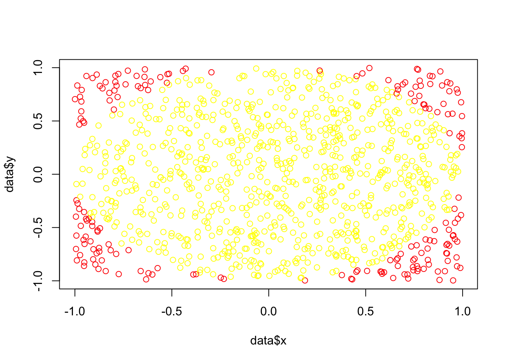
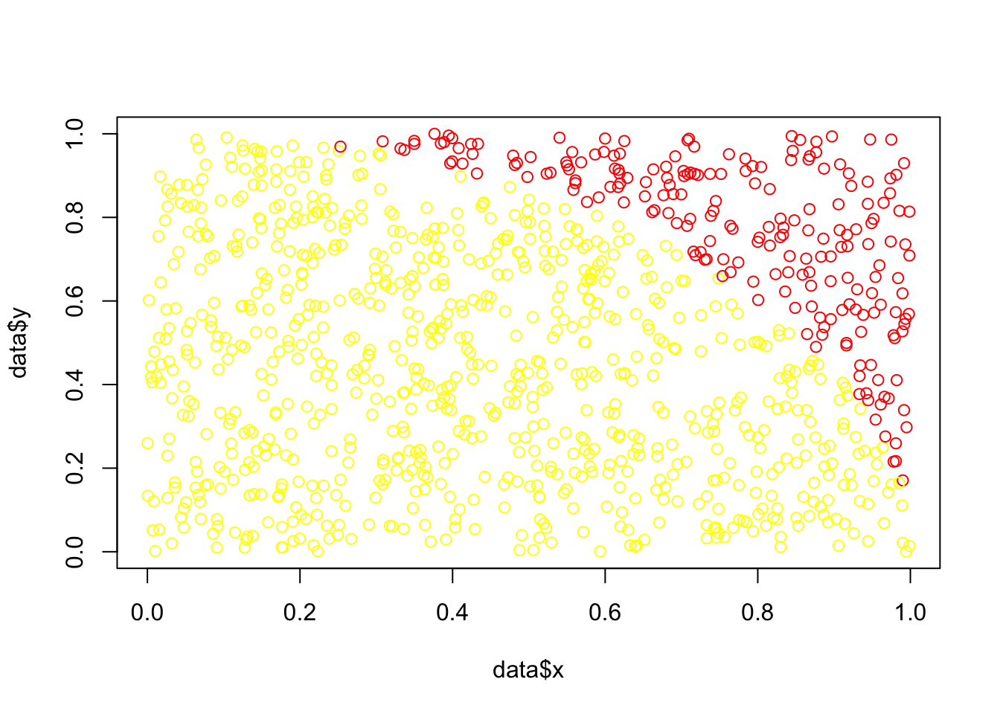
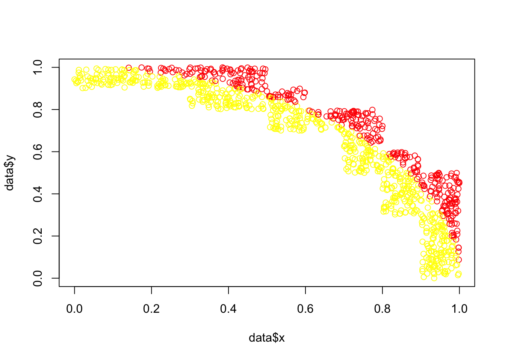

pi[1] 3.141593Hubert Baechli
March 8, 2025
In contrast to the simple method described below, the first exercise should calculates our own PI.
The following is a step-by-step guide to putting the first programming skills from the lesson into practice.
As Ven showed in the first lesson…
… if we throw thousands of random placed darts into a square field, the number of darts that fall into the enclosed circle should represent the area of that circle in relation to the area of the square.
In the following we will try to confirm this with our own programming skills.
Generation of a random position for a single dart within a square. The square extends from -1 to +1 in the X-direction, as well as in the Y-direction.
Use a random number generator for a uniform distribution and save the result in the two variables x and y (GAP are placeholder)
Now calculate the distance from this position to the center. You can use the following simplified formula for our chosen square
Create a decision rule and print “inside” if the point is inside the circle or “outside” if it is not.
Create now a loop (use for or while statement) and execute the code from steps 1 to 3 within it. You should get something like that now
Hint: Use may 10 iteration for the beginning
Copy now the code from Step 4 and modify it in a way that instead of outputting a result for each point, it sums up the number of “insides”.
Use something like that,
or more elegant write the results in a vector.
If you use 1000 iteration you should became such a number
[1] 804As the final step, you now need to calculate PI from your result and compare it with the real one ;-)
If you, as we hoped, have been playing around with the code, you’ve probably noticed that it takes exponentially more time with a larger number of iterations! Therefore, here are some ways to optimize the code.
These are very helpful because they are easy to read and interpret. However, they are very slow! Using the analogy Ven has used, each line is a page in a book. A loop means you constantly have to flip back and forth through the pages. In contrast, vector operations are much faster because it is already known in advance which operations need to be performed for the given values.
Although 10e8 iterations are performed here, it computes almost without any delay.
Hint: You may try to understand why this gives the same result.
n <- 1e8
data <- data.frame(
x = runif(n=n,min=-1,max=1),
y = runif(n=n,min=-1,max=1)
)
data$dist <- data$x*data$x + data$y*data$y
data$inside <- 2 - ceiling(data$dist)
Selfmade_pi_opt1 <- sum(data$inside)/length(data$inside) * 4
head(data) x y dist inside
1 0.8771555 -0.08506678 0.7766381 1
2 0.7046882 -0.28475429 0.5776705 1
3 0.5319163 -0.38799774 0.4334772 1
4 0.8814713 -0.30334503 0.8690099 1
5 -0.2593019 -0.22595391 0.1182926 1
6 0.5955902 0.18933788 0.3905766 1As you can see, this way we already arrive a more precise solution much faster.
Plot of Dart-positions

R is a programming language for lazy people. Often, functions have preset default values, which in this example are even helpful. In others, it is very annoying because it makes the code harder to read. So you can love it or hate it, it’s up to you ;-)
Hint: May try ?runif to understand why this gives still the same result.
Hint: Plot of new Dart-positions

Since the effect of reducing the total area to a quarter is rather small, here is a clearer version. We now throw the darts only into fields where we expect a distinction. For fields in the 10x10 grid where we already know the answer, we do not throw any darts.

n <- round(1e8/21,0)
quader <-c(1,
1,
1,
1,
1,
9/10,
9/10,
9/10,
8/10,
8/10,
8/10,
7/10,
6/10,
6/10,
5/10,
4/10,
5/10,
4/10,
3/10,
2/10,
1/10)
data <- data.frame(
x = runif(n=n*length(quader),min=quader-1/10,max=quader),
y = runif(n=n*length(quader),min=rev(quader)-1/10,max=rev(quader))
)
data$dist <- data$x*data$x + data$y*data$y
data$inside <- 2 - ceiling(data$dist)
Selfmade_pi_opt3 <- (sum(data$inside) + n * 65)/(n * 100) * 4